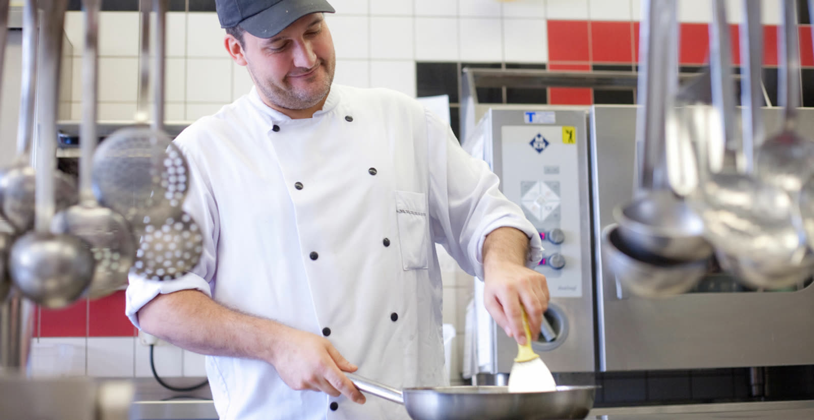
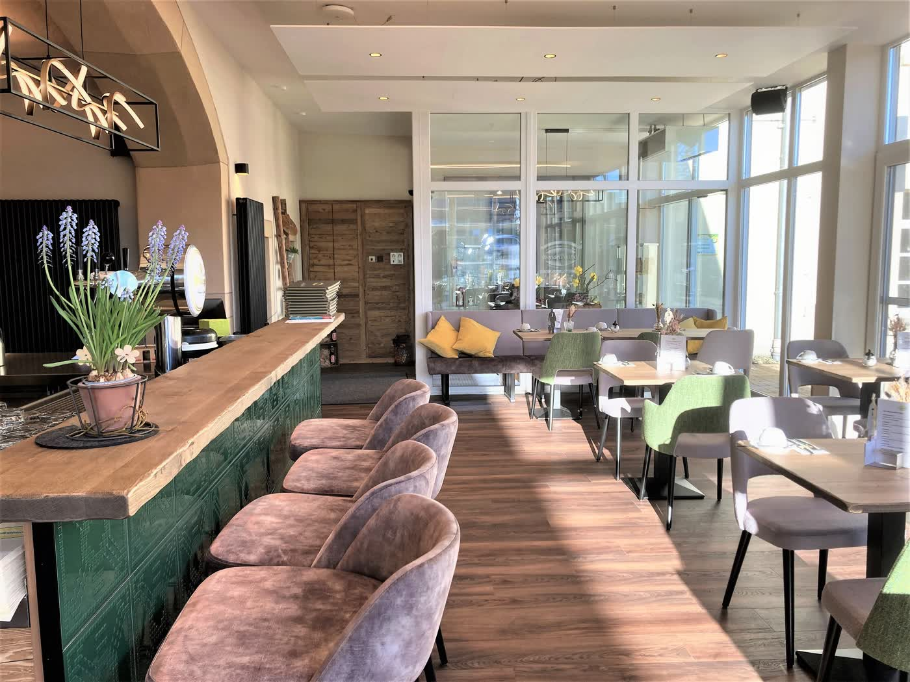
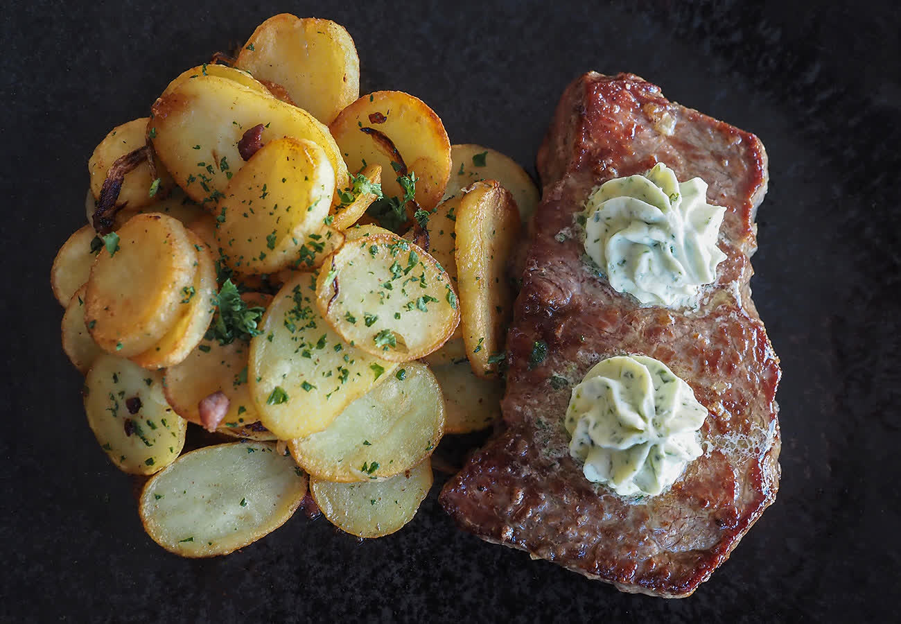
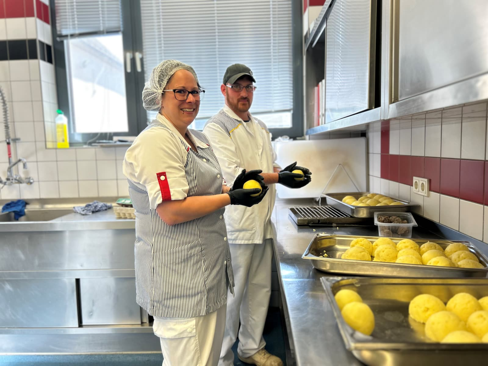
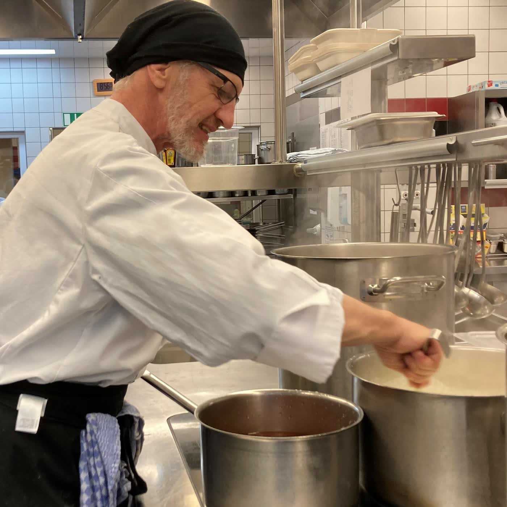

Restaurant „Hofküche"
Das Herz des Wendelinushofs: ein Ort der Begegnung, mitten in der Natur. Einfach gelebte Inklusion.

Vom Hof direkt auf den Teller.
Gekocht wird frisch, mit hofeigenen Fleisch- und Wurstwaren aus artgerechter Tierhaltung und saisonalem Gemüse aus eigenem Anbau. Auf der Karte stehen:
- Reichhaltiges Frühstücksbüffet
- Wöchentlich wechselnder Mittagstisch
- Saarländische Klassiker wie „Gefillde" und gutbürgerliche Hausmannskost
- Vegetarische Gerichte, für Allergiker nach Absprache

Rustikal, ungezwungen, sonnig.
Wintergarten, Kaminzimmer und eine sonnige Außenterrasse: Die Hofküche ist idealer Ausgangspunkt zum Radfahren, Spazieren und Wandern. Auch Feste sowie Privat- und Firmenfeiern richten wir aus.



Unsere Karten
Alle Karten als PDF, immer aktuell. Der Mittagstisch wechselt wöchentlich.
Brunch 2026
Samstags von 9:30 bis 14 Uhr. Reservierung für den Brunch ausschließlich telefonisch.
- 11. April
- 16. Mai
- 13. Juni
- 11. Juli
- 8. August
- 19. September
- 10. Oktober
- 14. November
- 19. Dezember
Öffnungszeiten
- Dienstag bis Sonntag
- 9-18 Uhr
- Warme Küche, durchgehend
- 11:30-17 Uhr
- Montag
- Ruhetag
Änderungen vorbehalten.